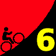

|  |
2009 Low-Key Hillclimbs Week 6 Results: Bohlman-Norton-Kittridge-Quickert-On Orbit-Bohlman 07 Nov 2009 |
| Scott Frake slays On Orbit Lane (Adam Tow) |
Thanks to James Porter for his excellent handling of results this week! Your humble webmaster, away in Colorado this weekend, had only to plug James's excellent spreadsheets into the scoring scripts and everything ran seamlessly. Here's James' report from the scene:
Men's Non Hybrid Median Time was approximately 34:36, a smoking fast time. There were 73 male non hybrid competitors and 5 female non hybrid competitors. The women's median time was a very fast 45:00. Bill Bushnell with the fastest time of course was in the Hyrbid category where his combination of muscle and motor pumped out over 600 watts to crush the climb in 21 minutes.
Congratulations to Scott Frake (who claims he is not in shape and would have not won had Eric Balfus not broke his chain) for taking over my out of shape dads category for his 1st place and only unassisted time under 27 minutes. Christy Cowley dominated the women's field with a blistering time of 37:06.
Especially noteworthy was 2009 leading junior Andre Swart, who not only finished this brutal climb but for the second time in a row exceeded 100 points. Andre is an essential lock in the overall junior rankings this year. Andre is the only identified junior to have ever finished Bohlman-On Orbit in the Low-Key series.
Further of note is François Cosquer flying in from Verneuil sur Seine France just to do the Low-Key Bohlman. Okay, so he was here on business. But we are happy to see Low-Keys go intercontinental!
Thanks to coordinator James Porter, with help from Patt Baenen, Michael Barnes, Brenda Brunner, Bill Bushnell, Stephen Chapel, Phil Dubach, Stephen Fong, Clark Foy, Christine Holmes, Howard Kveck, Justin Lucke, Ingrid McCarty, Pat Parseghian, Peter Tapscott, and Adam Tow for making today's climb possible!median time = 21:06
pl # rider team category time mph fph score 1 6 Bill Bushnell Low-Key Hybrid 21:06 12.63 6000 100.00
median time = 34:46
pl # rider team category time mph fph score 1 262 Scott Frake Webcor/Alto Velo 45+ 26:54 9.90 4706 129.24 2 163 Carl Nielson Sr's & Mr's of No Mercy 45+ 28:05 9.49 4508 123.80 3 18 Tim Clark Metrigear 40+ 28:36 9.31 4427 121.56 4 315 Tom Gardin 45+ 28:42 9.28 4411 121.14 5 139 Laurent Pfertzel 45+ 29:15 9.11 4328 118.86 6 201 Rune Dahl Western Wheelers 45+ 29:16 9.10 4326 118.79 7 156 Rich Hill LGBRC 40+ 29:25 9.06 4304 118.19 8 80 Bill Davis Google 25-29 29:36 9.00 4277 117.45 9 401 Jacob Berkman 29:37 8.99 4275 117.39 10 98 Bruce Gardner Sr's & Mr's of No Mercy 35+ 30:08 8.84 4201 115.38 11 226 Brian Edwards Rocky Mounts/Pearl Izumi 30+ 30:09 8.84 4199 115.31 12 144 Andy Brisnehan Western Wheelers 50+ 30:19 8.79 4176 114.68 13 23 Ron Brunner Low-Key Commuter 30:50 8.64 4106 112.76 14 410 John Walker Google 45+ 30:51 8.64 4104 112.70 15 224 Mike Schuster Google 40+ 31:15 8.52 4051 111.25 16 316 Christian Paquet Doogie 50+ 31:15 8.52 4051 111.25 17 94 Nathan Cauffman UID 30+ 31:33 8.44 4013 110.20 18 243 Jeff Farnsworth San Jose Bike Club 50+ 31:51 8.36 3975 109.16 19 234 Evan Paull Webcor/Alto Velo 25-29 32:03 8.31 3950 108.48 20 59 Scott Martin Bike Trip 50+ 32:03 8.31 3950 108.48 21 192 Michael Simos LGBRC 35+ 32:04 8.31 3948 108.42 22 33 Martin Hyland Western Wheelers 50+ 32:05 8.30 3946 108.36 23 45 Sean Broeder Silicon Valley Triathlon 45+ 32:05 8.30 3946 108.36 24 42 Nick Pelly Google 32:56 8.09 3844 105.57 25 120 Peter Mehlitz 45+ 32:58 8.08 3840 105.46 26 113 Kevin Comerford Commuter 33:04 8.06 3829 105.14 27 161 Mike Salameh 55+ 33:06 8.05 3825 105.04 28 414 David Quincy Sponge Bob 33:23 7.98 3792 104.14 29 232 Bob Williams Over The Hill 50+ 33:25 7.97 3789 104.04 30 287 Stewart Thompson Pen Velo/Pomodoro 5 33:45 7.89 3751 103.01 31 197 Ryan Gibson Google 33:53 7.86 3736 102.61 32 87 Chuck Spiteri Pen Velo/Pomodoro 50+ 33:58 7.84 3727 102.36 33 413 John Richardson Over The Hill 55+ 34:09 7.80 3707 101.81 34 79 Gino Cetani Western Wheelers 35+ 34:32 7.71 3666 100.68 35 114 Andre Swart Ryro Junior 34:39 7.69 3654 100.34 36 56 David Vrane SLACer 45+ 34:43 7.67 3647 100.14 37 420 Dave Rossow Webcor/Alto Velo 35+ 34:49 7.65 3636 99.86 38 402 Bill Preucel Sr's & Mr's of No Mercy 45+ 35:13 7.56 3595 98.72 39 72 Phil Alne LGBRC 40+ 35:18 7.55 3586 98.49 40 85 John Carrino Palantir 25-29 35:31 7.50 3565 97.89 41 269 Jeff Shute Google 30+ 35:32 7.50 3563 97.84 42 250 Dirk Veenema Stanford Cycling Elite 36:07 7.38 3505 96.26 43 173 François Cosquer E.C.V.V.T. 40+ 36:14 7.35 3494 95.95 44 155 Larry Klein Jerry 45+ 36:20 7.33 3484 95.69 45 73 Vince Cummings 36:22 7.33 3481 95.60 46 111 Gary Griffin Bike Trip 55+ 36:27 7.31 3473 95.38 47 146 William Von Kaenel LGBRC 50+ 36:47 7.24 3442 94.52 48 347 Matt Beadon 30+ 36:51 7.23 3436 94.35 49 324 Paul Melville Doogie 55+ 37:21 7.13 3390 93.08 50 363 James Dudley 37:24 7.12 3385 92.96 51 57 John Kastel Death Valley 45+ 38:05 7.00 3324 91.29 52 91 Patrick Callahan Western Wheelers 40+ 38:12 6.97 3314 91.01 53 332 Jens Weber Doogie 30+ 38:22 6.94 3300 90.62 54 203 Edward Abeleven UID 40+ 39:08 6.81 3235 88.84 55 122 Mark Powers Pen Velo/Pomodoro 50+ 39:16 6.78 3224 88.54 56 400 Chris Toshok RAMROD 5 39:41 6.71 3190 87.61 57 51 Richard Contreras 50+ 39:55 6.67 3172 87.10 58 174 Keith Devlin Western Wheelers 60+ 39:57 6.67 3169 87.03 59 272 Jonathan Sek San Jose Bike Club 45+ 40:17 6.61 3143 86.31 60 338 George Lee 40:20 6.60 3139 86.20 61 70 Garry Chinn Silicon Valley Triathlon 41:49 6.37 3028 83.14 62 133 David Puglia LGBRC 55+ 42:13 6.31 2999 82.35 63 119 Gary Swart Ryro Senior 42:40 6.24 2967 81.48 64 64 Han Wen 40+ 42:50 6.22 2956 81.17 65 251 Christopher Olson Google 5 43:20 6.15 2922 80.23 66 21 Kley Cardona ACTC 45+ 43:46 6.09 2893 79.44 67 240 Jerry Hitchcock 50+ 46:57 5.67 2696 74.05 68 90 Tim Sutton Plus 3 45+ 47:06 5.66 2688 73.81 69 371 Jeroem Meiier 35+ 49:28 5.39 2559 70.28 70 126 John Conklin 40+ 50:12 5.31 2522 69.26 71 25 Carl Butler Sr's & Mr's of No Mercy 50+ 54:44 4.87 2313 63.52 72 11 Doug Simpkinson Webcor/Alto Velo 35+ 55:55 4.76 2264 62.18
median time = 44:59
pl # rider team category time mph fph score 1 39 Christy Cowley Sr's & Mr's of No Mercy 40+ 37:06 7.18 3412 121.25 2 37 Laura Hipp Western Wheelers 39:30 6.74 3205 113.88 3 153 Karis McFarlane Silicon Valley Triathlon Commuter 44:59 5.92 2814 100.00 4 245 Laura Egley Dos Egley's 45+ 45:01 5.92 2812 99.93 5 61 Lisa Emmerich Team Rwanda 45+ 50:47 5.25 2493 88.58
pl team score scoring 1 Sr's & Mr's of No Mercy 360.42 (Carl Nielson, Christy Cowley, Bruce Gardner) 2 Western Wheelers 347.35 (Rune Dahl, Andy Brisnehan, Laura Hipp) 3 Google 341.40 (Bill Davis, John Walker, Mike Schuster) 4 Webcor/Alto Velo 337.58 (Scott Frake, Evan Paull, Dave Rossow) 5 LGBRC 325.10 (Rich Hill, Michael Simos, Phil Alne) 6 Doogie 294.95 (Christian Paquet, Paul Melville, Jens Weber) 7 Pen Velo/Pomodoro 293.91 (Stewart Thompson, Chuck Spiteri, Mark Powers) 8 Silicon Valley Triathlon 291.50 (Sean Broeder, Karis McFarlane, Garry Chinn) 9 Low-Key 212.76 (Ron Brunner, Bill Bushnell) 10 Over The Hill 205.85 (Bob Williams, John Richardson) 11 Bike Trip 203.86 (Scott Martin, Gary Griffin) 12 UID 199.04 (Nathan Cauffman, Edward Abeleven) 13 San Jose Bike Club 195.46 (Jeff Farnsworth, Jonathan Sek) 14 Ryro 181.82 (Andre Swart, Gary Swart) 15 Metrigear 121.56 (Tim Clark) 16 Rocky Mounts/Pearl Izumi 115.31 (Brian Edwards) 17 Sponge Bob 104.14 (David Quincy) 18 SLACer 100.14 (David Vrane) 19 Dos Egley's 99.93 (Laura Egley) 20 Palantir 97.89 (John Carrino) 21 Stanford Cycling 96.26 (Dirk Veenema) 22 E.C.V.V.T. 95.95 (François Cosquer) 23 Jerry 95.69 (Larry Klein) 24 Death Valley 91.29 (John Kastel) 25 Team Rwanda 88.58 (Lisa Emmerich) 26 RAMROD 87.61 (Chris Toshok) 27 ACTC 79.44 (Kley Cardona) 28 Plus 3 73.81 (Tim Sutton)